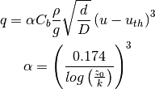

Processes, formulations and numerics¶
Transport equation¶

Multiple sediment fractions¶
Sediment transport of a multiple fractions is computed equal to transport of a single fraction. For each fraction transport is computed given an equilibrium concentration . Since not all fractions can be at equilibrium concentration at the same time at the same place, a distribution is needed that favors one fraction over another. This is the key to multiple sediment fraction transport.
A common approach is to use the sediment distribution of the bed to weigh the equilibrium concentrations of the different fractions [Delft3DManual]. This approach has the disadvantage that not only pickup of sediment, but also deposition of sediment depends on the sediment distribution in the bed. This is physically incorrect since deposition is not strongly correlated to the bed composition.
A concequence of this approach is that fine sediments picked up downwind cannot pass a patch of coarse sediment where the fraction of fine sediments is small. In this patch, the equilibrium concentration of fines is artificially lowered and fines are deposited, while coarse sediment is picked up.
To overcome this behavior the distribution for erosion and deposition is determined separately according to equation (1).
First the distribution in the air is determined.
This distribution can sum up to a value smaller than, equal to or larger than unity that correspond to three regimes ( is the number of fractions):
is the number of fractions):
- : less than capacity transport, erosion may occur
- : capacity transport, no exchange with the bed
- : more than capacity transport, deposition will occur
In case of deposition the distribution in the air is normalized and used as distribution in the transport formulation. In case of erosion the distribution in the bed is used to fill the available space in the air column. The distribution of the bed is determined by the mass of each sediment fraction available in the top layer of the bed. This means that if a grid cell is at 70% of capacity transport, 30% of the distribution used in the transport formulation is determined by the distribition in the bed and 70% is determined by the distribution in the air.
(1)
Hydraulic mixing and depostion¶
The left-hand boundary can be taken as a sea boundary imposing tides and waves onto the sandy bed. Apart from sheltering the bed from the wind and thus transport, it may also simulate processes of mixing and deposition.
If grid cells are flooded the top layers of the bed are mixed to simulate stirring by waves.
Mixing takes place over a certain depth indicated by the depth of disturbance (DOD).
Over the depth of disturbance the average sediment distribution is determined and the actual sediment distributions are then replaced by its average.
The depth of disturbance is computed based on the offshore wave height , but it is maximized by a maximum wave height over depth ratio  according to equation (2). The factor is an empirical ratio between onshore wave height and depth of disturbance which is 10% - 20% [Masselink2007].
according to equation (2). The factor is an empirical ratio between onshore wave height and depth of disturbance which is 10% - 20% [Masselink2007].  and
and  are the water bed level respectively.
are the water bed level respectively.
(2)
Flooding of grid cells may also lead to a fresh sediment deposit at these grid cells.
The deposit is computed as adaptation of the supply term  according to equation (3).
The deposit is computed by multiplying the fall velocity
according to equation (3).
The deposit is computed by multiplying the fall velocity  with the sediment concentration in the water column and the time step
with the sediment concentration in the water column and the time step  .
Deposition is maximized by the water depth and weighted according to the initial sediment distribution of the bed over fractions.
.
Deposition is maximized by the water depth and weighted according to the initial sediment distribution of the bed over fractions.
(3)